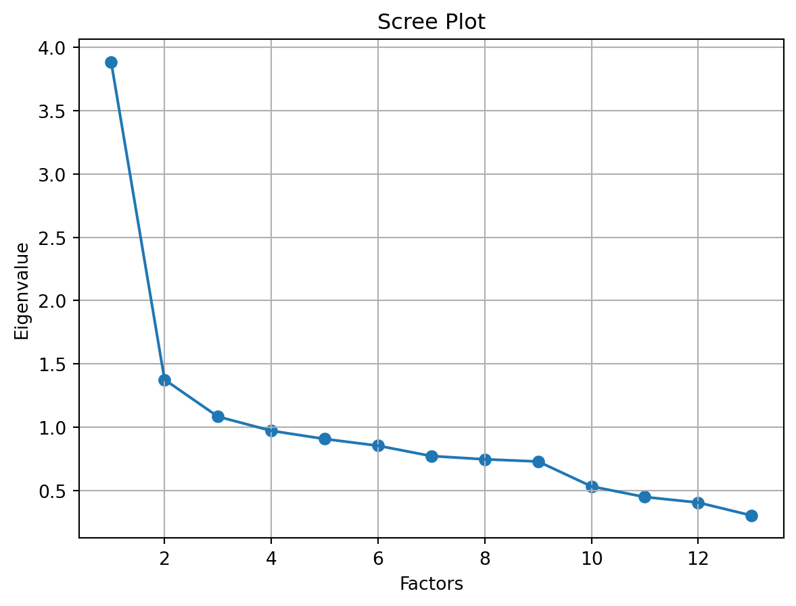

Code
from factor_analyzer.factor_analyzer import calculate_bartlett_sphericity
chi_square_value, p_value = calculate_bartlett_sphericity(X)
chi_square_value, p_value(729226.0301912884, 0.0)In order to calculate the changing values there is a need for a two dimensional representation of the values. The two dimension are based on the Traditional values versus Secular-rational values and Survival values versus Self-expression values (see The two dimensional approach for definitions).
Running factor analysis on a set of ten indicators produces the two dimensions. The ten indicators utilized—five for each dimension—were selected for technical reasons: we wanted to be able to compare results over time, therefore we used indicators from each of the Values Surveys’ four waves. These ten indicators don’t necessarily represent the most sensitive indicators of these dimensions; rather, they simply represent a small portion of the various beliefs and values that these two dimensions tap. They do a decent job of capturing two crucial aspects of cross-cultural variation, but we should keep in mind that these particular items are really proxies for much larger underlying cross-cultural variance dimensions.1
1 Source: Chapter 2 from Inglehart, R & C. Welzel. 2005. Modernization, Cultural Change and Democracy: The Human Development Sequence. New York: Cambridge University Press
The project has the following hypothesis:
In order to test these hypothesis the project looks at a subgroup of countries that have been subject to social, political and economic change.
One unsupervised machine learning approach used for dimensionality reduction is factor analysis. In order to express the common variance, or variation resulting from correlation among the observed variables, this approach constructs factors from the observed variables. It does sound a little technical, so let’s simplify it by dividing it into pizza and slices.
Factor analysis involves a number of steps, including:
In order to carry out the Factor analysis this project leveraes the following python libraries:
The Bartlett’s test6 determines whether a correlation exists in the provided data. It investigates if the correlation matrix is an identical matrix, which is the null hypothesis (H0). The same matrix has all the same diagonal entries as number 1. The null hypothesis therefore presupposes that there is no association between the variables.
Because factor analysis tries to explain the common variance, or the variation caused by correlation among the variables, we want to reject this null hypothesis. A correlation between the variables is present with a 95% confidence level if the p test statistic value is less than 0.05, indicating that the correlation is not an identical matrix.
(729226.0301912884, 0.0)Since the p test statistic is less than 0.05, we can infer that there is correlation between the variables, which is a clear indication that factor analysis should be used.
The KMO Test calculates the percentage of variance that could be shared by all the variables. Greater proportions are anticipated since they show greater connection between the variables, allowing for the use of dimensionality reduction techniques like factor analysis. KMO score ranges from 0 to 1, and values greater than 0.6 are highly valued. It also serves as a gauge of how well our data lends itself to factor analysis.
0.8604554971565004The overall proportion of variation for the data is greater than 0.80. It demonstrates that there is more correlation in our data and that dimensionality reduction strategies like factor analysis can be used.
Our dataset has the same amount of variables and components as other datasets. There won’t be much meaningful information regarding the common variance among the variables provided by all the factors. Therefore, we must choose the number of components. The amount of common variance each factor explains can be used to determine the number of factors. In general, we will plot the eigenvalues and the factors.
Since there are two dimensions each with 2 poles, the number of factors required are 2.
# Create factor analysis object and perform factor analysis for 2 factors
from factor_analyzer.factor_analyzer import FactorAnalyzer
fa = FactorAnalyzer(n_factors=2, rotation='varimax')
# Possible rotations:
# - varimax (orthogonal rotation)
# - promax (oblique rotation)
# - oblimin (oblique rotation)
# - oblimax (orthogonal rotation)
# - quartimin (oblique rotation)
# - quartimax (orthogonal rotation)
# - equamax (orthogonal rotation)
fa.fit(X)
fa.get_factor_variance()
eigen_values, vectors = fa.get_eigenvalues()
import matplotlib.pyplot as plt
# Create scree plot using matplotlib
plt.scatter(range(1,X.shape[1]+1),eigen_values)
plt.plot(range(1,X.shape[1]+1),eigen_values)
plt.title('Scree Plot')
plt.xlabel('Factors')
plt.ylabel('Eigenvalue')
plt.grid()
plt.show()